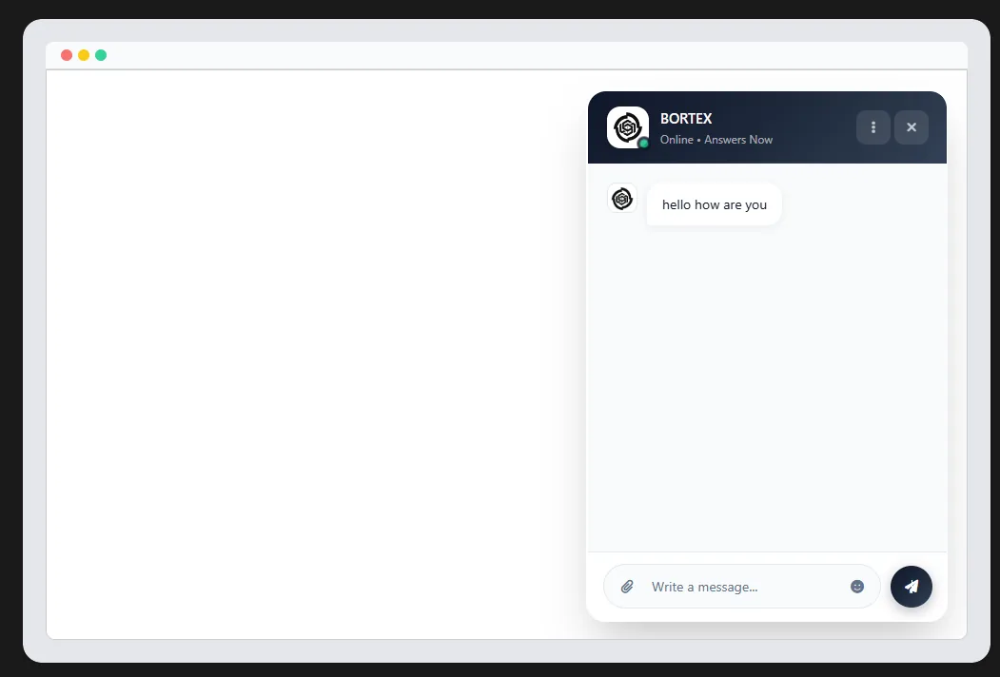
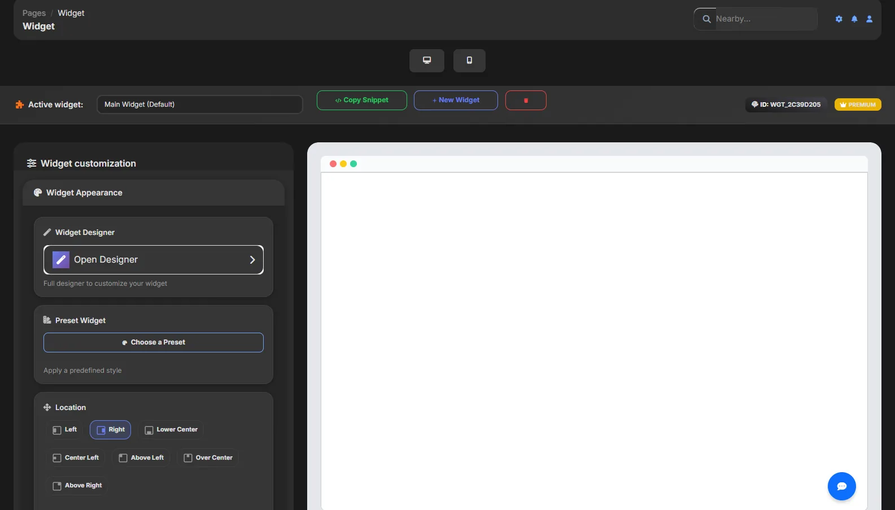
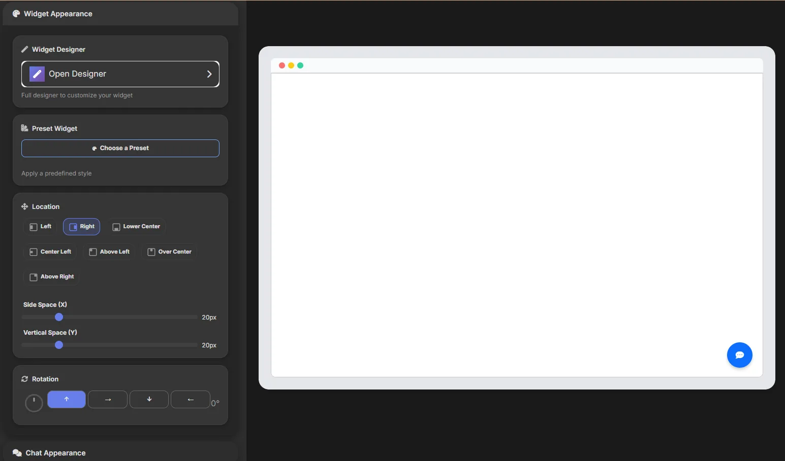

Hai un sito web e vuoi che i tuoi visitatori possano contattarti in tempo reale, ricevere risposte automatiche dall'AI o persino avviare una chiamata video con te? Il widget di chat Bortex fa tutto questo — e si installa in meno di cinque minuti, con una singola riga di codice.
Cerchi la pagina commerciale del widget?
Questa guida spiega l'installazione. Per una panoramica completa delle funzioni per aziende, visitatori online, AI, chiamate e tracking, vai alla nuova pagina dedicata al widget Bortex.
Scopri il widget AI per siti web
Cos'è il widget di chat Bortex
Il widget Bortex è un bottone di chat interattivo che puoi aggiungere a qualsiasi sito web: vetrina, e-commerce, landing page, portfolio o portale aziendale. Una volta installato, appare nell'angolo del tuo sito e permette ai visitatori di aprire una finestra di conversazione in tempo reale.
Dietro al widget c'è l'intera infrastruttura Bortex: l'AI risponde automaticamente quando non sei disponibile, tu puoi intervenire in live dalla dashboard, e i visitatori possono anche richiedere una chiamata vocale o video direttamente dalla chat. Tutto in un'unica soluzione, senza installare plugin aggiuntivi.
Come installare il widget sul tuo sito web
L'installazione è progettata per essere rapida anche per chi non è sviluppatore. Dalla dashboard Bortex, nella sezione Widget, trovi il tuo snippet JavaScript personalizzato. Basta copiarlo e incollarlo prima del tag </body> di ogni pagina del tuo sito:

Se usi un CMS come WordPress, Webflow o Shopify, puoi incollare lo snippet nell'area "Custom Code" o tramite un plugin che inietta codice nell'header/footer. Con Shopify l'integrazione è ancora più diretta: Bortex offre una app nativa che installa il widget automaticamente sul tuo store senza toccare il codice.
Compatibilità
Il widget Bortex funziona su qualsiasi sito HTML, WordPress, Webflow, Wix, Squarespace e Shopify. Non richiede librerie esterne, non rallenta il caricamento della pagina e si adatta automaticamente a desktop e mobile.
Personalizza il widget per il tuo brand
Dalla dashboard Bortex puoi modificare ogni aspetto visivo del widget: il colore del bottone, l'icona, l'avatar dell'assistente, il nome visualizzato nella chat e la posizione sullo schermo (angolo in basso a destra, sinistra o centro). La chat si apre con un messaggio di benvenuto personalizzato e può mostrare i suggerimenti delle domande frequenti già configurate.
Una funzione particolarmente efficace è il messaggio di invito: una piccola nuvoletta testuale che appare accanto al widget dopo alcuni secondi dall'arrivo del visitatore. Puoi impostare il testo ("Ciao, posso aiutarti?"), il ritardo prima che compaia, la durata e il colore. Questo tipo di interazione proattiva aumenta in modo significativo il tasso di apertura della chat.

Chat live: rispondi ai visitatori in tempo reale
Quando un visitatore apre la chat e scrive un messaggio, ricevi una notifica in tempo reale sulla dashboard Bortex. Da lì puoi rispondere direttamente, vedere il profilo del visitatore (pagina in cui si trova, sistema operativo, lingua) e gestire più conversazioni simultanee in modo organizzato.
Se non sei online, l'assistente AI di Bortex risponde automaticamente al posto tuo, mantenendo il tono e le informazioni che hai configurato in fase di setup. Questo significa che il tuo sito non smette mai di essere "presente" per i visitatori, anche fuori orario lavorativo.
L'AI risponde per te: configurazione e limiti
L'assistente AI di Bortex è addestrato sulle informazioni che fornisci: i tuoi prodotti, servizi, orari, politiche di reso, FAQ. Ogni risposta automatica rispecchia la voce del tuo brand e può essere rafffinata nel tempo grazie al feedback delle conversazioni reali.
Il piano gratuito include 100 messaggi AI al mese: sufficienti per iniziare e testare il funzionamento. Con il piano Premium i messaggi diventano illimitati, con routing verso provider cloud avanzati per risposte più precise e veloci.
Bortex non è solo un widget: è un assistente che lavora con te
L'idea dietro Bortex è più ampia di una semplice chat per siti web. Bortex nasce come assistente capace di aiutarti nella gestione quotidiana: organizzare impegni, seguire attività, supportare la pianificazione e dare continuità ai tuoi eventi e alle tue priorità. Il widget è l'estensione pubblica di questa stessa intelligenza operativa.
Questo significa che la stessa logica con cui Bortex ti aiuta a organizzare il tuo lavoro può essere applicata anche verso l'esterno: rispondere ai visitatori del tuo sito, accogliere richieste, guidare utenti e clienti e trasformare il traffico in conversazioni utili. Non è un blocco separato: è il tuo assistente che diventa visibile anche online.
Vuoi fare il passo business?
Se usi già Bortex come assistente personale, puoi trasformarlo in uno strumento business attivando un widget personale per il tuo sito. In questo modo Bortex non solo ti aiuta a gestire agenda, attività ed eventi, ma rappresenta anche la tua presenza digitale verso clienti e visitatori.
Il passaggio è naturale: da assistente che organizza il tuo lavoro, a assistente che comunica, risponde e converte anche sul web.
Integrazione con Shopify: il widget che vende
Se gestisci un e-commerce su Shopify, Bortex si integra nativamente con il tuo store. Il widget può rispondere a domande sui prodotti, sulle spedizioni, sui resi e sullo stato degli ordini — direttamente dalla chat, senza che il cliente debba navigare tra le pagine o aspettare una email.
L'integrazione Shopify consente anche di collegare l'AI ai dati del catalogo, rendendo le risposte contestuali e precise. Il risultato è un assistente che conosce il tuo negozio come un venditore esperto, disponibile 24 ore su 24.
Chiamate video e contatto telefonico con i visitatori
Una delle funzionalità più potenti e distintive di Bortex è la possibilità di avviare una chiamata video direttamente dalla chat. Quando un visitatore ha bisogno di un supporto più personale — per esempio durante un acquisto importante, una consulenza o la risoluzione di un problema complesso — può richiedere di parlare con te in video in pochi secondi.
Ricevi la notifica sulla dashboard, accetti la chiamata e in pochi secondi sei faccia a faccia con il tuo cliente direttamente dal browser, senza installare nulla. Questo livello di contatto diretto trasforma la chat in uno strumento di vendita e assistenza di altissimo livello.
Il piano gratuito include 60 minuti di video chiamate al mese. Con il piano Premium le video chiamate sono illimitate — ideale per agenzie, consulenti, negozi online ad alto valore medio dell'ordine e chiunque voglia offrire un supporto veramente personalizzato.
Perché le chiamate video cambiano le conversioni
Il contatto diretto — voce e volto — abbatte le barriere psicologiche della diffidenza online. I clienti che parlano direttamente con un operatore prima dell'acquisto convertono a tassi molto più alti rispetto a chi interagisce solo via chat testuale o email. Bortex porta questa dinamica direttamente nel tuo sito.
Piano Free vs Premium: cosa cambia
Bortex è disponibile con un piano gratuito pensato per iniziare subito, e un piano Premium per chi ha bisogno di volumi e funzionalità senza limiti.
| Funzionalità | Free | Premium |
|---|---|---|
| Visitatori/utenti in chat al mese | Max 100 | Illimitati |
| Messaggi AI al mese | Max 100 | Illimitati |
| Minuti video chiamate al mese | 60 min | Illimitati |
| Campagne push notification | Max 4 | Illimitate |
| Allegati in chat | 3 file | 10 file |
| Integrazione Shopify AI | Budget base | Budget premium |
| Supporto | Community / Email | Prioritario |
Notifiche push: resta in contatto dopo la visita
Bortex integra anche un sistema di notifiche push web: puoi chiedere ai visitatori il permesso di ricevere notifiche e poi raggiungerli direttamente sul browser — anche quando non sono sul tuo sito — con aggiornamenti, offerte o messaggi personalizzati.
Con il piano gratuito puoi inviare fino a 4 campagne push al mese. Con il Premium le campagne sono illimitate, con strumenti avanzati di segmentazione e programmazione degli invii.